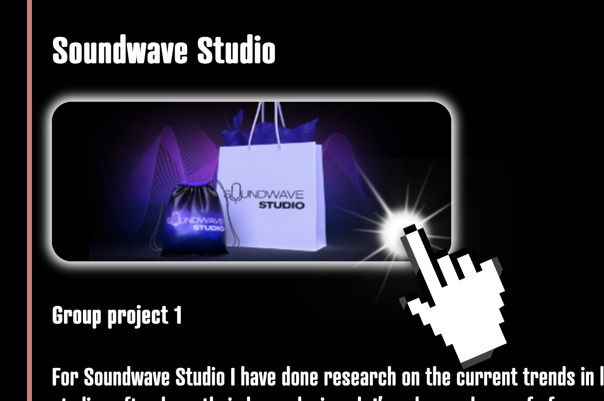

Learning outcomes, explained.
On this page, the learning outcomes are represented by colourcoded buttons. Click on on of these buttons and you get to see explanations of how I implemented those outcomes into my projects.
On the top left you'll see an 'expand view' button, which makes reading large amounts of text easier. Clicking on images reveals more content.